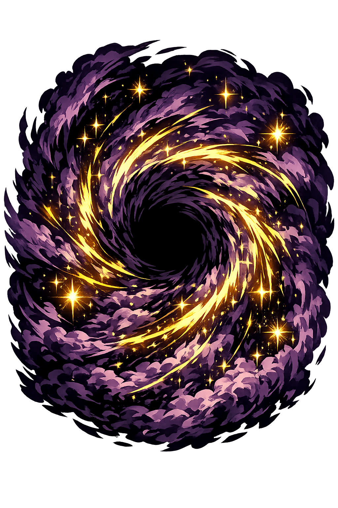

The Authentic Orthography
The First Void · The Yawning Gap · Origin of All

Why cháos.com preserves the Greek voice
Χάος
The name in its original Ancient Greek form. A neuter noun built from the verb chainō (χαίνω), "to yawn, to gape." In Hesiod's Theogony, Χάος is the first thing to come into existence — not a god, not a place, but a state of being: the gaping emptiness that preceded all form, all matter, all divinity.
CHAOS
Stripped of its Greek identity, the word was reduced to five Latin letters. In modern English, "chaos" means disorder, confusion, randomness — a pale distortion of the original. The primordial void became a synonym for mess. The yawning gap that birthed gods was flattened into a word for traffic jams and cluttered desks.
Cháos
The acute accent on the a restores the stress placement of the original Greek. In Ancient Greek, the accent fell on the first syllable — khá-os — and the acute marks this precisely. Without it, the word loses its Greek identity. This is not decoration. It is philological accuracy.
cháos.com → xn--chos-8ra.com
The non-ASCII character á (U+00E1) is encoded while the ASCII remains visible. To the DNS, it is Punycode. To humanity, it is Cháos.
How the void was truly spoken
Before gods, before earth, before sky
In the beginning, there was only Cháos. Not a god with a body and will, but a condition — the yawning gap, the formless void, the infinite absence from which all presence would eventually emerge. Hesiod's Theogony opens with these words: "First of all, Chaos came into being." Not Gaia. Not Ouranos. Not Zeús. The gap.
Cháos is not evil. It is not good. It is pre-moral — the empty space between what will become earth and sky, the breathing room existence needs before it can begin.
In Hesiod's cosmogony, Cháos is the first thing to be. From it sprang Gaia (Earth), Tartaros (the Abyss), and Eros (Desire) — the foundational forces that would generate all else.
From Cháos came Erebus (Darkness) and Nyx (Night). From their union came Aether (Light) and Hemera (Day). The void is not sterile — it is generative darkness.
Cháos is what makes distinction possible. Without the gap, there is no above and below, no light and dark, no self and other. The void is the condition of differentiation.
Stories of the void and what emerged from it
Hesiod's Theogony (c. 700 BCE) tells the authoritative Greek creation narrative. First came Cháos — the yawning void. Then Gaia (Earth), broad-bosomed and sure-seated, and Tartaros (the Abyss), dark and misty, in the depths of the broad-pathed earth. And then Eros (Desire) — fairest among the deathless gods, who loosens limbs and subdues the mind and wise counsel in the breasts of gods and men. These four are the primordial forces. Everything else follows. Cháos itself gave birth to Erebus (Darkness) and Nyx (Night), who in turn produced Aether (Light) and Hemera (Day). The void is not passive — it generates.
The genealogies of Greek myth are complex and sometimes contradictory, but the primordial line is clear: Cháos produces Erebus and Nyx. Nyx, alone, produces a terrifying brood — Moros (Doom), Ker (Destruction), Thanatos (Death), Hypnos (Sleep), the Oneiroi (Dreams), Momus (Blame), Oizys (Misery), the Hesperides, the Moirai (Fates), the Keres, Nemesis, Apate (Deceit), Philotes (Friendship), Geras (Old Age), and Eris (Strife). Many of these are not evil — they are necessary. Death and Sleep are siblings. Doom and Friendship share a grandmother. The void does not discriminate in its gifts.
After the first generation, the cosmos begins to sort itself. Gaia gives birth to Ouranos (Sky), the Mountains, and Pontos (Sea). Ouranos covers Gaia completely, and their union produces the Titans. But the separation of sky from earth — the creation of space — is itself a repetition of the primal gap. Cháos is not a one-time event. It is the ongoing condition that makes relationship, distance, and movement possible. Without the void, all things would be compressed into undifferentiated sameness.
Ovid, in his Metamorphoses, reimagined Cháos as a raw, confused mass of elements — not empty space, but undifferentiated matter. The Stoics identified Cháos with water or air. For the Neoplatonists, Cháos was the lowest emanation of the One, the furthest point from divine order. Modern physics finds echoes in the quantum vacuum — a seething field of potential energy, apparently empty yet capable of generating particle-antiparticle pairs. The void, it seems, has never stopped yawning.
The first generation born from the void
How the void is spelled across systems
The Unicode restoration with acute accent on the first syllable. This preserves the stress placement of the original Greek and distinguishes the name from the English word "chaos." The acute is the only diacritic needed — the Greek original has no long vowels, no breathings in the capital form, just the pitch accent that tells you how the word was sung.
The bare ASCII form. Historically valid as a transliteration, but it erases the stress and conflates the primordial void with the modern English word for disorder. In the PUNYCODEX system, this is the fallback — usable, but not authoritative.
The acute on the first syllable marks stress — without it, the word loses its Greek identity. In Ancient Greek, cháos was pronounced with a rise in pitch on the first syllable, a musical accent that the Romans borrowed as stress and English flattened into nothing. The accent is a recovery of sound, not an ornament.
Cháos is the first. The void that precedes all others. But it is not alone. Across the encoded web, the authentic names of Greek, Norse, and other pantheons have been restored — each with its own domain, its own lore, its own truth.
This is not a directory. This is a resurrection.
Enter the CodexSee how Cháos behaves in the PUNYCODEX Type Tool — with predictive autocomplete, character-by-character breakdown, and scholarly constraint validation.
chaos
→
Cháos